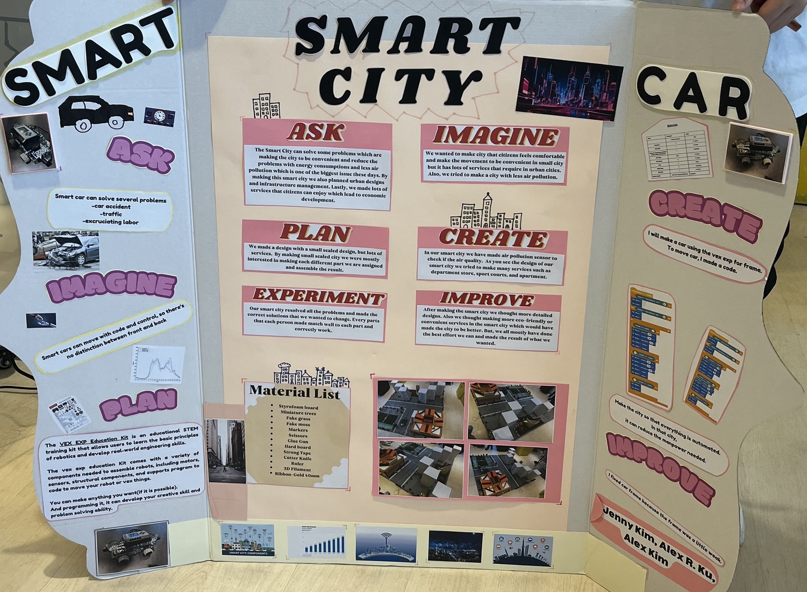
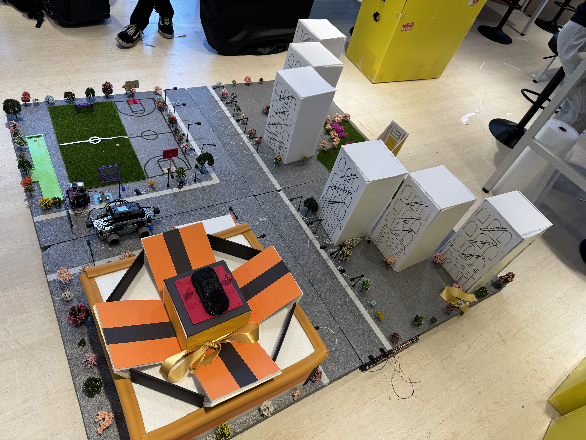
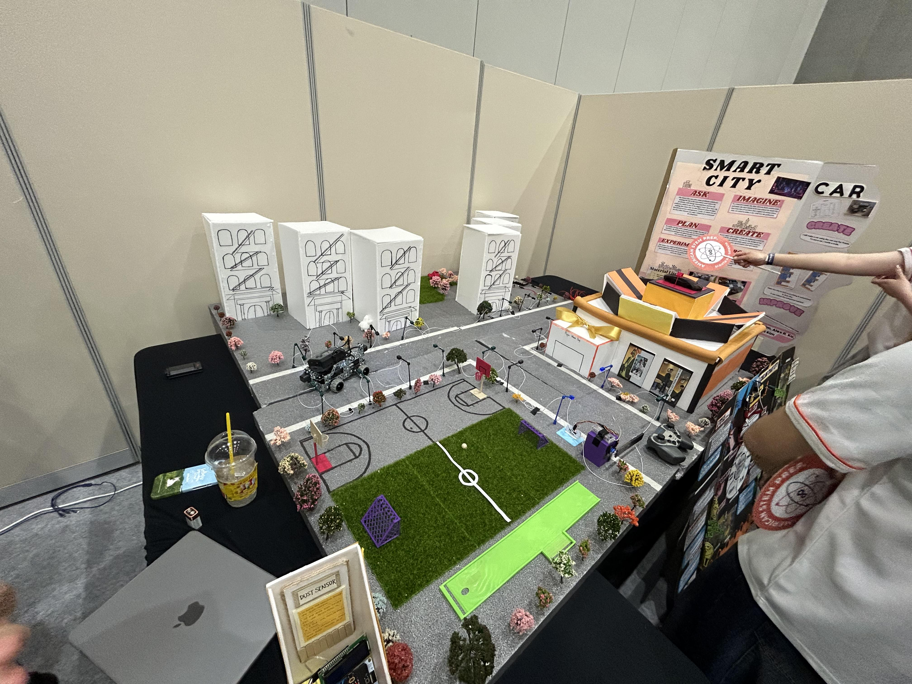
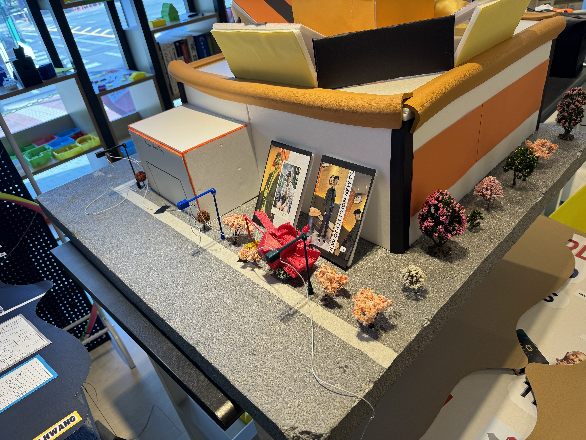
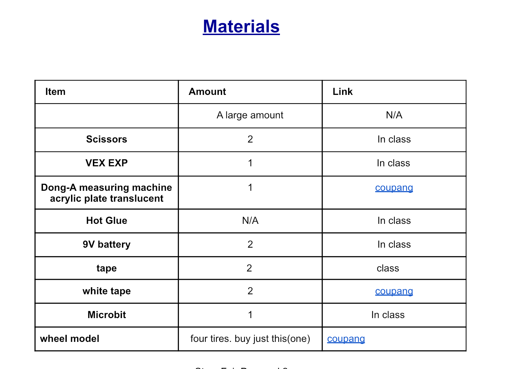
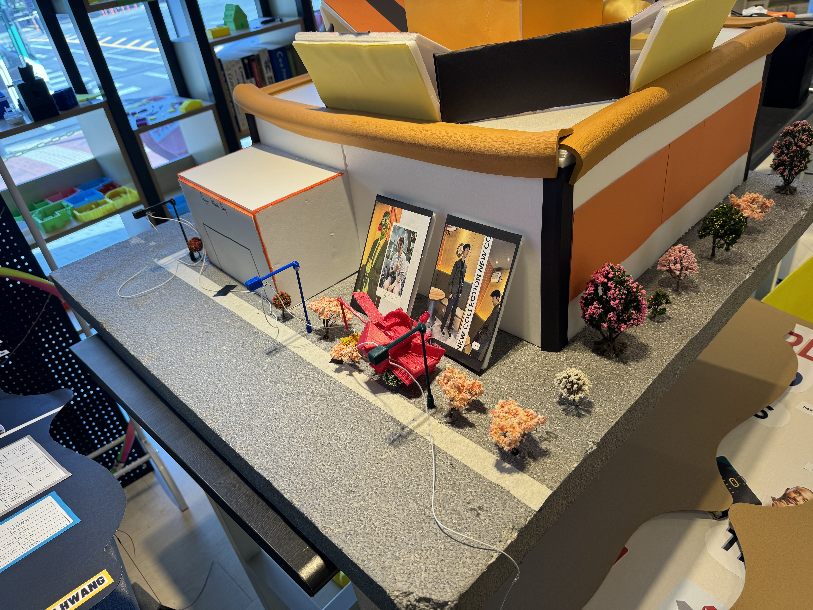
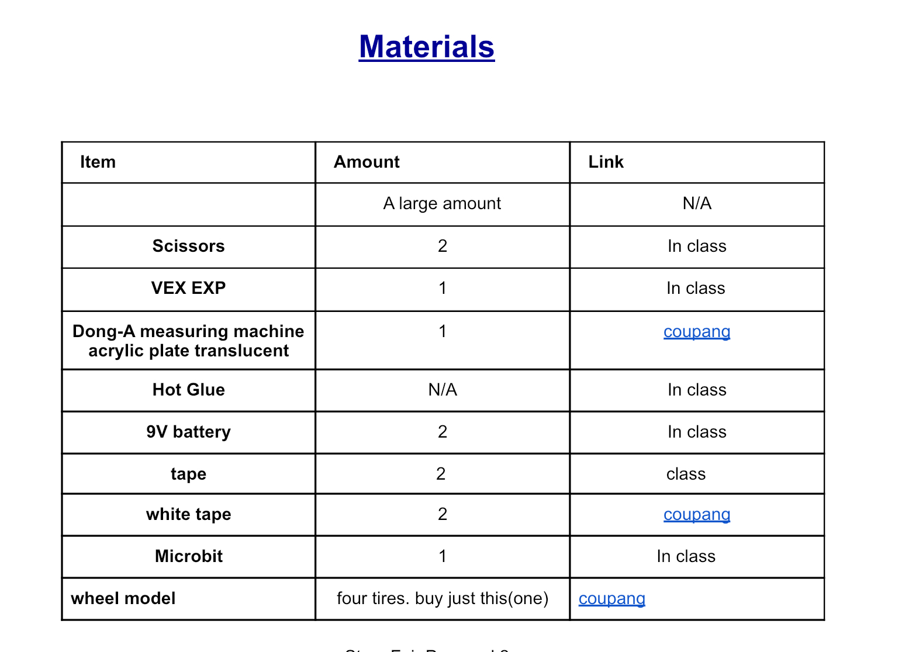

2024 Stem Fair Project-Smart Apartment Complex
Result



Stem Fair is American Stem Prep.'s massive science fair that is held in once a year.
Our group, 10th graders, decided to build a smart apartment complex.
First of all, we divided parts to accomplish before the due date, Stem Fair day.
I was responsible for designing the whole apartment complex including apartments, park, outdoor facillities, and department store.
Also I built everything else, with various materials, that I designed, except the apartments.
Everyone gave their amazing effort to the parts that were responsible for them.
Overall, we communicated extraordinarily well and finished.
I learned how to design the whole apartment complex.
Process
 




Ask
How can we satisfy and attract the residents with an astonishing place?
Imagine
The idea of Smart Apartment Complex, inspired from the concept of Smart City.
Plan
Design, measure, and searched for the appropriate/stable materials for the whole Smart Apartment Complex. Also, divided the whole complex into three districts.
Create
- Slice foam boards accurately by the setted magnitude (size). e.g. (The top square piece for apartment was 20cmX20cm.)
- Create 3D models with TinkerCad and print them through 3D printers. e.g. (Promotion wheel-less Lamborghini, basketball hoops, golf course, etc)
- Deorate the complete pieces with various decorative materials.
- Combine completed three districts and compare the size.
Improve
- Add gold ribbons on top of the apartments, because they looked empty.
- Reprint or add more facilities on the park. e.g. (playground, benches, tables, stage, fountain, etc.)
Stem Fair Reflection